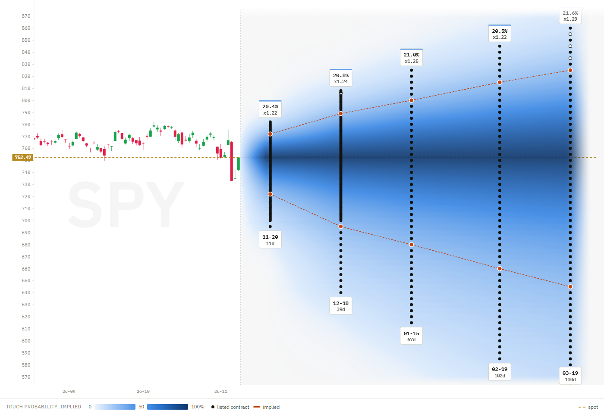
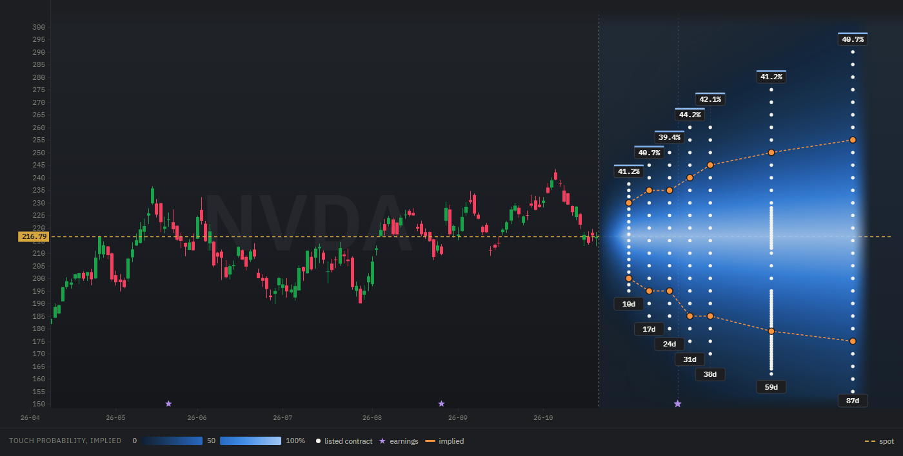

Expected move calculator: the range option prices imply, up to six months out
The expected move is the range a stock is expected to stay within until an expiry, according to its option prices. OptionsCone draws that range on the price chart for the weekly and monthly expiries up to about six months out, for stocks and ETFs, and around earnings. Because it uses the price of every listed strike, it also shows something the usual formula hides: the range often reaches further down than up.
Windows may show a warning when you install, as it does for many new apps. Click More info, then Run anyway.

Example: the SPY expected move into December
On 9 November 2026 SPY traded at $752.47. The textbook expected move to the expiry on 18 December, 39 days later, came to ±$40, or ±5.3%: from about $713 to $792.
Take a guess before you read on: if you mark the range from the price of every put and call instead, does it still run from $713 to $792, or does it lean to one side?
It leans. Option prices put the 15% line below the price at $695, 7.6% down, and the one above at $789, only 4.9% up. Puts on the index cost more than calls the same distance away, because investors pay for protection against falls. The usual formula averages that away, the chart shows it.
| SPY, expiry | Textbook ± | Lower line | Upper line |
|---|---|---|---|
| 20 November (11 days) | 3.0% | −4.0% | +2.6% |
| 18 December (39 days) | 5.3% | −7.6% | +4.9% |
| 15 January (67 days) | 7.0% | −9.6% | +6.3% |
| 19 February (102 days) | 8.8% | −12.3% | +8.3% |
| 19 March (130 days) | 10.0% | −14.3% | +9.6% |
Data: SPY option chain, downloaded on 9 November 2026 at 13:04 New York time, quotes delayed about 15 minutes, monthly expiries. Textbook range from the at-the-money implied volatility, lines at the listed strikes nearest to a 15% probability, calculated with OptionsCone. An illustration, not a recommendation.
The textbook formula
The common definition of the expected move is one standard deviation, calculated from the at-the-money implied volatility of the expiry:
expected move = price × implied volatility × √(days to expiry / 365)
A popular shortcut takes about 85% of the price of the at-the-money straddle. Both give one number, the same distance up and down, and the stock is expected to finish inside that range about two times out of three. For a quick estimate that is fine. For placing strikes it leaves out the skew, the fact that each strike has its own implied volatility, which is why the lines in OptionsCone often sit further out below the price than above it. On SPY for 18 December, the lower line sat 43% further from the price than the formula suggests, and the upper one 8% closer. OptionsCone works out the range from the option price of every strike, so you start with the range option prices imply instead of approximating it with a single number.
How to read it in OptionsCone
- Download the ticker during US trading hours.
- Set the contour to expire and the probability to 15% below and above the price, with both sides linked. That is the closest setting to one standard deviation, and the two lines enclose about 70% of the outcomes.
- Read the lines expiry by expiry. Each marker is the listed strike nearest to the 15% probability. Hover it for the exact probability, the strike's distance from the price and its implied volatility.
- Change the probability for a narrower or wider range, for example 25% on each side for the range the stock finishes in about half the time.
- Unlink the two sides to set a different probability below and above the price. That gives a lopsided range, for example for a bullish strangle with the put further away than the call, or a bearish one the other way round.
- Read the badge above each expiry for its implied volatility. A jump from one expiry to the next usually means an event in between, most often earnings.
Expected move for earnings
Before a report, the expiries after it trade at a higher implied volatility than those before it. The difference is what option prices assign to the report itself.

On NVDA the badge rose from 39.4% for the expiry of 13 November, the last one before the report, to 44.2% for 20 November, the first one after it. The lower line jumped from $195 to $185 within one week. Turned into a single day, that extra volatility comes to a move of about 6% on report day, roughly $13 either way, which is what option prices assumed for the report four weeks ahead.
report-day move ≈ √( days to the later expiry / 365 × (IV after² − IV before²) )
Data: NVDA option chain, downloaded on 20 October 2026 at 15:09 New York time, quotes delayed about 15 minutes. Implied volatility from the expiry badges, calculated with OptionsCone. An illustration, not a recommendation.
Finish or touch
The expected move describes where the stock finishes. On the way there it travels further: a stock often trades beyond the range for a while and comes back by expiry. Switch the contour to touch and the lines mark the strikes the stock reaches at some point with the same probability, which sit noticeably further out. For a stop, a roll rule or the short strike of a strangle, that is often the more useful range. The options probability calculator page explains the difference in more detail.
Questions it answers
- Where should the short strikes of a strangle or an iron condor go? Near or outside the expected range of the expiry you trade.
- How big a move is priced in for earnings? The jump in the badges and in the range at the first expiry after the report.
- Is the downside priced wider than the upside? Compare the distance of the two lines from the price.
- How far can the stock run by a given date? Pick the expiry nearest to that date and read the range.
Free and Pro
The free version draws the expected range from option prices for each expiry up to about six months out, together with the probability, implied volatility, open interest, volume, spread and time value of every strike, each as its own heatmap. Open interest shows where other traders are positioned, volume and the bid-ask spread show how liquid a strike is and what it costs to trade, and the time value per day shows what a seller can earn each day. The range itself is what option prices assume, which often includes a premium for risk.
OptionsCone Pro puts the stock's own realized odds next to it, made forward-looking, so you can see whether option prices assume more or less movement than the stock itself supports, strike by strike.
FAQ
What is the expected move of a stock?
The expected move is the range option prices imply for a stock by a given expiry, usually one standard deviation. The stock is expected to finish inside it about two times out of three and outside it about one time in three.
How is the expected move calculated?
The textbook formula is price times at-the-money implied volatility times the square root of the days to expiry divided by 365. A common shortcut is about 85% of the price of the at-the-money straddle. Both give one symmetric number, while OptionsCone marks the range from the price of every listed strike.
Is the expected move a forecast?
No. It is the range option prices assume, and option prices often include a premium for risk. The stock can and regularly does finish outside it, and it can trade outside it before expiry and come back. How often the probabilities came true is shown on the accuracy page.
Try it on your own tickers for free
Download any US stock or ETF with listed options and see its expected range for each expiry up to six months out, before earnings too.
Related
The expected range in OptionsCone is an estimate from option prices, not a forecast. Nothing on this page is a recommendation to buy or sell SPY, NVDA or any other security.